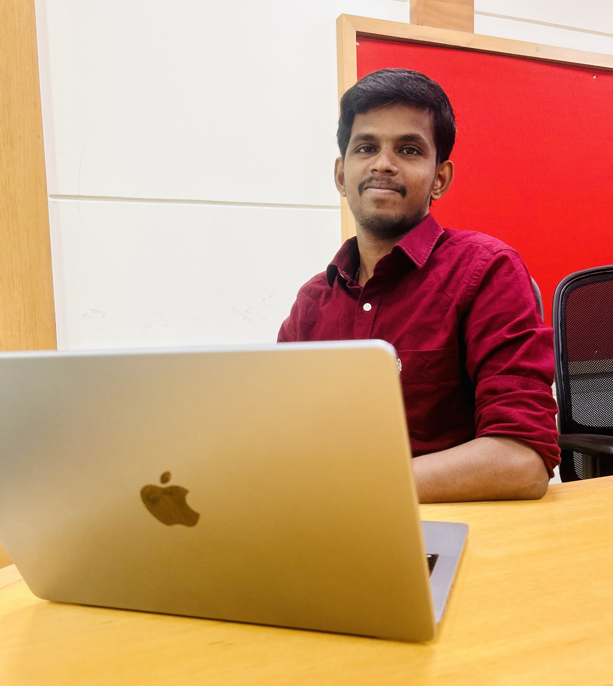

Engineering
quality through
automation.
I'm Kalaiyarasan Perumal, an Automation Test Engineer with around 5 years of experience building reliable automation solutions across web, mobile, API and backend applications. I focus on automation frameworks, cross-platform testing, CI/CD integration and AI-assisted engineering.

Turning complex testing challenges
into reliable automation.
I have around 5 years of experience in software quality engineering, working with enterprise applications across entertainment, news, education and business platforms.
Automation Frameworks
Developing reusable automation frameworks using Playwright, Selenium, Appium and WebDriverIO.
Mobile Quality Engineering
Testing iOS and Android applications across phones, tablets and different device configurations.
API & Backend Validation
Validating REST APIs, business logic, microservices and distributed backend integrations.
My technical toolkit.
Technologies and tools used across professional projects and automation workflows.
Programming
Web & Mobile Automation
API & Backend
Testing Frameworks
CI/CD & DevOps
AI-Assisted Development
Projects & platforms.
Enterprise testing experience across Disney, news, sports, streaming, education and business applications. Some project details and repositories are confidential.
ABC News Mobile Application
Automated regression and new-feature test cases for the ABC News iOS application. Integrated test execution into GitLab pipelines and contributed to the automation reporting portal.
ESPN Mobile App
Developed and maintained cross-platform automation for Android phones, tablets, iPhones and iPads. Supported daily CI execution, regression coverage, locator maintenance and release validation.
Marvel Unlimited
Built reusable mobile automation scripts for Android and iOS. Investigated flaky tests, updated locators, validated application stability and supported production releases.
Disney Streaming Backend (DSS)
Created API automation scripts for backend microservices, developed WireMock services and validated requests, responses, business logic and distributed data flows.
Plex Systems
Developed web automation scripts and executed functional, regression and smoke testing. Maintained test cases and execution reports using qTest Manager.
Saavas Learning
Built Playwright automation scripts from user stories and acceptance criteria. Maintained automated scenarios and collaborated with development teams to resolve defects.
ACOS
Implemented UI and API automation, validated application data with SQL queries and worked with developers to investigate and report application defects.
JMeter Performance Testing POC
Explore my performance testing experiments and automation work on GitHub.
Combining automation with
AI-assisted development.
I use AI-assisted development tools to support coding, understand complex automation workflows, improve debugging and accelerate test engineering tasks. AI-generated suggestions are reviewed and validated before being used.
Claude.ai
Use AI-assisted reasoning to understand complex code, explore automation approaches, generate code suggestions, review test logic and troubleshoot failures.
Amazon Q
Use AI coding assistance to explore unfamiliar codebases, understand existing implementations, suggest code improvements and accelerate automation development.
GitHub Copilot
Assist with writing repetitive automation code, generating test method suggestions, completing functions and improving development productivity.
Cursor
Use AI-assisted IDE capabilities to understand code, navigate related files, refactor implementations and explore automation framework improvements.
AI-Assisted Test Design
Explore AI-assisted generation of positive, negative, boundary and edge-case scenarios from requirements and acceptance criteria, with manual review.
AI-Assisted Debugging
Use AI assistance to interpret stack traces, review automation code, understand failure patterns and suggest possible improvements to test stability.
AI accelerates engineering. Validation ensures quality.
AI-generated code, test scenarios and debugging suggestions must be reviewed, executed and validated. I do not treat AI-generated output as a replacement for engineering judgment or actual test evidence.
Professional experience.
Automation Test Engineer
- Working across ABC News, ESPN Mobile, Marvel Unlimited and Disney Streaming Backend projects.
- Developing iOS automation using XCUITest, Swift and Xcode.
- Building Android and iOS automation using Appium, WebDriverIO, TypeScript and JavaScript.
- Maintaining reusable automation components using the Roxas framework.
- Creating Karate-based API automation and WireMock mock services for backend integrations.
- Integrating automation into GitLab CI/CD and GitHub Actions workflows.
- Investigating flaky automation failures, updating locators and supporting release validation.
- Using AI-assisted development tools to support coding, debugging and test engineering workflows.
SDET
- Worked on Plex Systems, Saavas Learning and ACOS projects.
- Developed Selenium automation using Java, TestNG and Cucumber BDD.
- Built Playwright automation scripts using JavaScript and Cucumber BDD.
- Created API automation using Karate and Postman.
- Validated application data using SQL and Swagger API documentation.
- Maintained test plans, test cases and execution results using qTest Manager.
- Tracked defects and collaborated with development teams to resolve issues.
- Supported functional, regression, smoke and production release testing.
Awards & achievements.
Recognition received for dedication, consistent performance and contributions to the team.
Hardworking Bee of the Year
Recognized for dedication, hard work, consistent performance and contributions to the organization and team.
Employee of the Month
Recognized for consistent performance, commitment to responsibilities and valuable contributions to the team.
Education & training.
Bachelor of Engineering
Electrical and Electronics Engineering
Software Testing Course
Software Testing Training
Testing insights & technical writing.
Explore my articles and technical notes about automation testing, mobile testing, API testing and testing tools.
Kalaiyarasan SDET Automation
Articles and learning notes covering Appium, WebDriverIO, TestProject, WireMock, Playwright and CI/CD automation.
Let's build better quality
into what comes next.
Open to SDET, QA Automation, Software Test Engineer and Quality Engineering opportunities.
Contact Information
☎Have an opportunity or project?
I'd love to discuss automation engineering, mobile testing, API quality, AI-assisted development and software quality improvements.
📍 Bengaluru, India